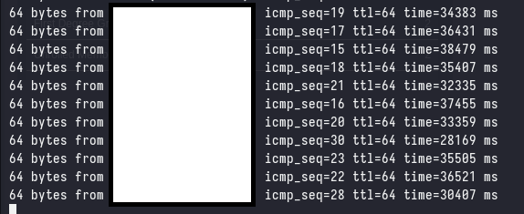

The CAPE Experience
Table of Contents
In the first quarter of this year, I completed the APTLabs Prolab, Certified Red Team Master (CRTM) and most recently passed the Certified Active Directory Pentesting Expert (CAPE) certification. The goal of this blog post is to provide a brief review of the above three labs/certifications as I found that detailed (and up-to-date) reviews were hard to come by.
Certified Active Directory Pentesting Expert (CAPE)

As I was making this post, another CAPE holder made a review of the certification, which I would highly recommend reading.
The Certified Active Directory Pentesting Expert (CAPE) certification is a gruelling 10-day long exam that tests the candidate’s ability to exploit Active Directory environments, this includes an industry-standard report that is expected to be delivered by the end of the 10 days. This course is meant to be a sequel to the Certified Penetration Testing Specialist (CPTS), and candidates are expected to have the knowledge and skills covered in the CPTS course.
The Good
The course and exam are, without a doubt, the best training I’ve encountered for Active Directory exploitation. The attack explanations are exceptional, the content is well-organized, and I frequently find myself revisiting the material as a reference. The NTLM Relay Attacks, ADCS Attacks, Active Directory Trust Attacks and MSSQL, Exchange, and SCCM Attacks modules offer some of the clearest and most effective explanations I’ve come across for such (relatively) complex topics.
The exam is (imo) by far the most difficult AD exam on the market, and it achieves this without relying on unrealistic vectors or overly complex attacks. The exam is well designed, and the attacks are fully in-scope of the course material - with the bulk of the difficulty coming from enumerating, and chaining together the various attacks.
The Bad
The following is based on my own experience with the course and exam, and may not be representative of the experience of others.
Some modules - such as the Active Directory BloodHound module, felt completely unnecessary to make an entire module out of. The same can be said for modules that teach a specific tool such as the Using CrackMapExec module, I do not believe that a module should be dedicated to teaching a specific tool, especially when the content of the module seems to be a copy-paste of the tool’s documentation.
During the exam, I found that the exam environment was very unstable, with exploit chains frequently requiring multiple resets to work. Additionally, at some points the latency was so bad that it was impossible to work effectively and I had no choice but to restart the lab.

However, the other CAPE holders that I spoke to did not experience the same issues, so it is possible that this was an isolated incident. Furthermore, HTB does not currently have any servers outside of EU/US, so the latency issues are not unexpected as I am in Singapore (APAC/Asia).